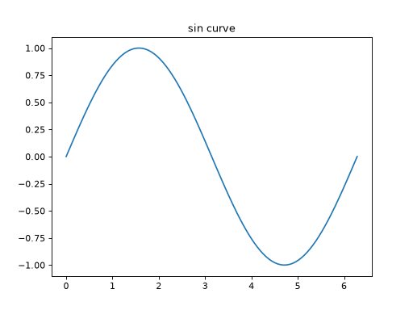

基本的な折れ線グラフ
ax.plot() を使うと、折れ線グラフを描画できます。
import matplotlib.pyplot as plt
import numpy as np
from matplotlib.axes import Axes
from matplotlib.figure import Figure
x: np.ndarray = np.linspace(0, 2 * np.pi, 100)
y: np.ndarray = np.sin(x)
fig: Figure
ax: Axes
fig, ax = plt.subplots()
ax.plot(x, y)
ax.set_title("sin curve")



plot は x 座標の配列と y 座標の配列を受け取り、線でつないだグラフを描画します。上の例では、numpy の linspace で生成した x の値に対して、sin の値を y としてプロットしています。
グラフを表示する
Python スクリプトとして実行する場合は、最後に plt.show() を呼び出すことでグラフをウィンドウに表示できます。
import matplotlib.pyplot as plt
import numpy as np
from matplotlib.axes import Axes
from matplotlib.figure import Figure
x: np.ndarray = np.linspace(0, 2 * np.pi, 100)
y: np.ndarray = np.sin(x)
fig: Figure
ax: Axes
fig, ax = plt.subplots()
ax.plot(x, y)
plt.show()